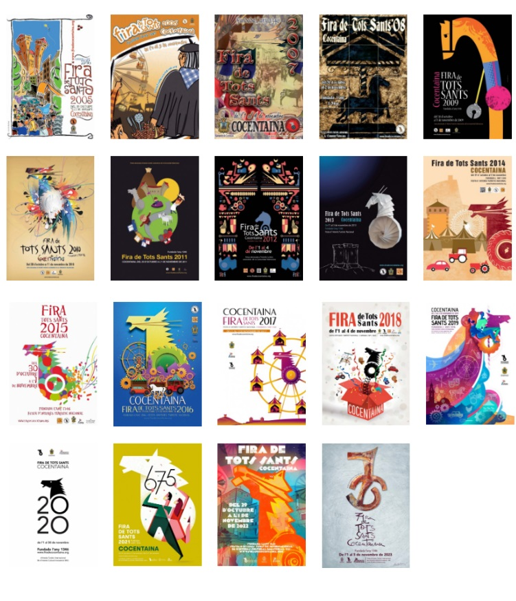
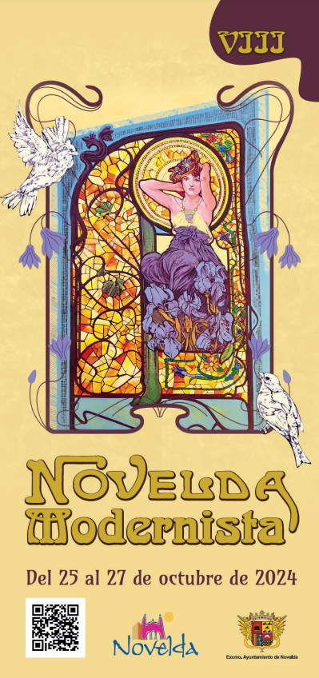
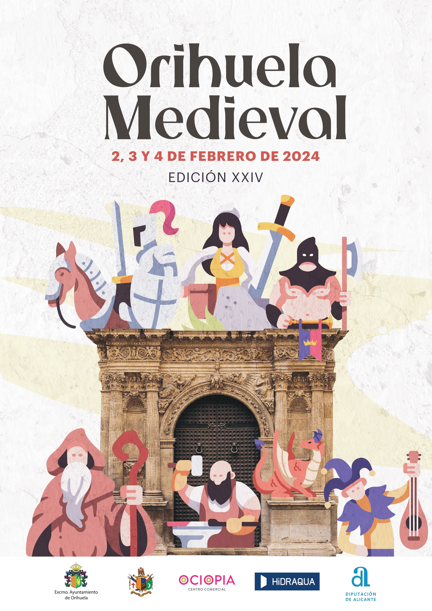
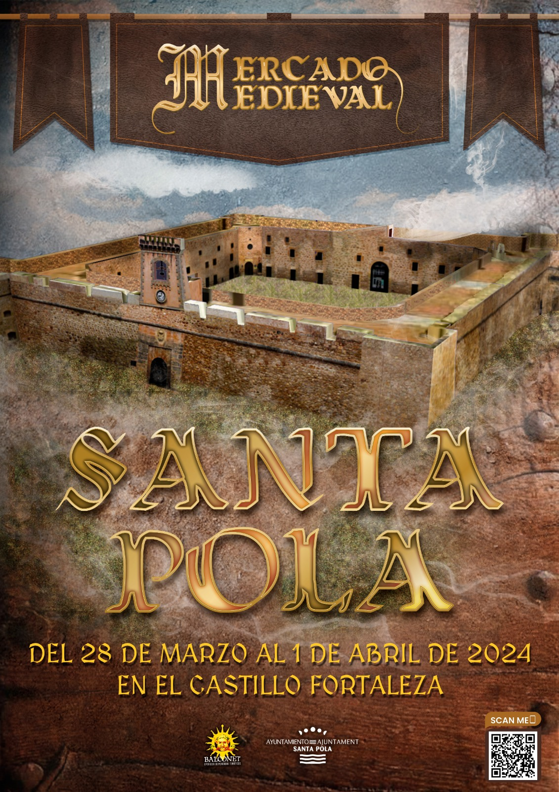

Fira de Tots Sants - Cocentaina
La Fira de Tots Sants de Cocentaina, en la provincia de Alicante, es una de las ferias más antiguas y emblemáticas de España, con más de 700 años de historia. Se celebra anualmente en torno al 1 de noviembre (Día de Todos los Santos) y fue declarada de Interés Turístico Internacional. La feria nació como un mercado agrícola y ganadero en el siglo XIV, pero ha evolucionado hasta convertirse en un evento cultural, comercial y festivo de gran magnitud. Características destacadas: Gran variedad de expositores: La feria cuenta con más de 800 expositores que ofrecen productos artesanales, maquinaria agrícola, automóviles, tecnología, y gastronomía local e internacional. Zona medieval y tradicional: Al igual que en los mercados medievales, se incluyen zonas dedicadas a oficios antiguos, artesanías tradicionales, y recreaciones históricas. Actividades y espectáculos: Durante la feria hay actuaciones de música y danza, exposiciones de animales, deportes tradicionales, exhibiciones de cetrería, y concursos. Gastronomía: Se pueden degustar productos típicos de la región, como embutidos, quesos, dulces artesanales y otros platos de la gastronomía valenciana. Asistencia masiva: Cada año atrae a cientos de miles de visitantes, lo que la convierte en uno de los eventos más importantes de la Comunidad Valenciana. La Fira de Tots Sants es un espacio donde la tradición, la innovación, y el comercio se unen, ofreciendo una experiencia cultural, festiva y comercial muy completa.
Mercado medieval - Novelda
25 al 27 de octubre Esta es la octava versión de la feria modernista que tiene como objetivo, exponer, dar a conocer y hablar sobre el modernismo y sus creaciones históricas. durante dos días los turistas y alicantinos podrán disfrutar de una amplia y variada agenda de actividades que van desde: visitas guiadas en el casco histórico de Alicante, como también visitas al Castillo de la Mola, y el Santuario. Los bailes, la cultura de las máscaras y concursos también hacen parte de la agenda que todos y todas podrán disfrutar del 25 al 17 de octubre en Alicante.
Mercado medieval - Orihuela
El centro histórico, como cada año, se convierte en el marco idóneo para recrear la Edad Media celebrando el Mercado Medieval. Un evento muy esperado, donde la alegría y la diversión están garantizadas con actividades lúdicas para todas las edades: música, bailes, títeres, animaciones teatrales, talleres de oficios antiguos... Espectáculos, que contribuyen a transportar al visitante al pasado en un ambiente especial, en el que no falta el olor de las especias, el color de los productos artesanales y el sabor de los alimentos cocinados en los distintas paradas ¡Todo un festival para los sentidos!
Mercado medieval Villena
Las Fiestas del Medievo en Villena son un evento único que transporta a los visitantes al corazón de la Edad Media. Ubicadas en el histórico barrio del Rabal, un área de origen árabe caracterizada por sus calles estrechas y casas antiguas, estas festividades ofrecen una inmersión completa en la época medieval. destacan eventos como la representación de la *Llegada a Villena de los Reyes Católicos*, un espectáculo que recrea la visita de los Reyes Isabel y Fernando en 1488, así como las *Bodas Medievales* en la explanada del Castillo de la Atalaya, con la emocionante participación de un halcón que lleva los anillos desde lo alto del castillo. Las luchas medievales, protagonizadas por especialistas en este deporte histórico, añaden un toque de adrenalina al ambiente. el Mercado Medieval de Villena, que en 2022 celebró su 20º aniversario, cuenta con más de 160 puestos que ofrecen productos de artesanía, orfebrería, cerámica y gastronomía típica de la época. Además, la Procesión de las Antorchas, con cientos de personas marchando bajo la luz de las antorchas al ritmo de tambores, es uno de los momentos más mágicos de las fiestas, culminando con un concierto de música celta junto al castillo. Organizadas por los propios vecinos del Rabal, estas fiestas destacan por su autenticidad y el compromiso de la comunidad en recrear la vida medieval. Gracias a su singularidad, en 2020 fueron declaradas Fiestas de Interés Turístico Autonómico, un reconocimiento que las posiciona como un referente cultural en la región.
Mercado medieval - Orihuela
El Mercado Medieval de Santa Pola, Alicante, es un evento anual que se celebra en el casco antiguo de esta localidad costera, normalmente en octubre. Durante este mercado, las calles se transforman en un entorno medieval con decoraciones, puestos de artesanía, alimentos típicos, y actuaciones. Los visitantes pueden disfrutar de espectáculos de malabaristas, música medieval, teatro callejero, demostraciones de oficios antiguos, y recreaciones históricas. El mercado ofrece una experiencia inmersiva, permitiendo a los asistentes descubrir productos tradicionales y disfrutar de una ambientación que rememora la Edad Media, con trajes de época, comida rústica, y actividades para toda la familia. Es un evento popular tanto para locales como para turistas, destacando por su autenticidad y el ambiente festivo que trae a Santa Pola.
Mercado medieval - Elche
El Mercado Medieval de Santa Pola, Alicante, es un evento anual que se celebra en el casco antiguo de esta localidad costera, normalmente en octubre. Durante este mercado, las calles se transforman en un entorno medieval con decoraciones, puestos de artesanía, alimentos típicos, y actuaciones. Los visitantes pueden disfrutar de espectáculos de malabaristas, música medieval, teatro callejero, demostraciones de oficios antiguos, y recreaciones históricas. El mercado ofrece una experiencia inmersiva, permitiendo a los asistentes descubrir productos tradicionales y disfrutar de una ambientación que rememora la Edad Media, con trajes de época, comida rústica, y actividades para toda la familia. Es un evento popular tanto para locales como para turistas, destacando por su autenticidad y el ambiente festivo que trae a Santa Pola.
Mercado medieval - San vicente de raspeig
El Mercado Medieval de Santa Pola, Alicante, es un evento anual que se celebra en el casco antiguo de esta localidad costera, normalmente en octubre. Durante este mercado, las calles se transforman en un entorno medieval con decoraciones, puestos de artesanía, alimentos típicos, y actuaciones. Los visitantes pueden disfrutar de espectáculos de malabaristas, música medieval, teatro callejero, demostraciones de oficios antiguos, y recreaciones históricas. El mercado ofrece una experiencia inmersiva, permitiendo a los asistentes descubrir productos tradicionales y disfrutar de una ambientación que rememora la Edad Media, con trajes de época, comida rústica, y actividades para toda la familia. Es un evento popular tanto para locales como para turistas, destacando por su autenticidad y el ambiente festivo que trae a Santa Pola.